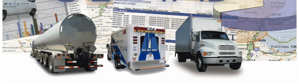

GPS Trip Reporting is the key.
Take Control of your rolling assets.
Geotab GPS Helps Drivers and Owners
Inti with Geotab reporting will not only help you to clamp down on vehicle abuse and costs but it will also encourage the drivers to enhance their productivity. Fuel usage can be halved in some instances by simply assessing the driver’s routes, unnecessary stopping points, idling times and or over-revving. Did I mention that gas is approaching $4.00/gal. We provides the user with:
- Activity Reports
- Customer Visits Reports
- Exception Rule Reports (shows what rules were broken)
- 8 Auxilliary Wires (To Monitor: Door, Seatbelt or Lights, for example)
- Risk Management Reports
- Speed Profile Reports
- Trip Lists Reports (electronic log book)
- Engine Idling reports
- Accident reports
- Delivery reports and many more…
Inti also develops customized reports for customers. These reports are developed by us and are simply emailed to the customers on demand and easily integrated into the Web application..
If you need answers to any of the questions on the sidebar send me an email (this will launch your email program) so be patient. Give me your phone number, I'll call you!
